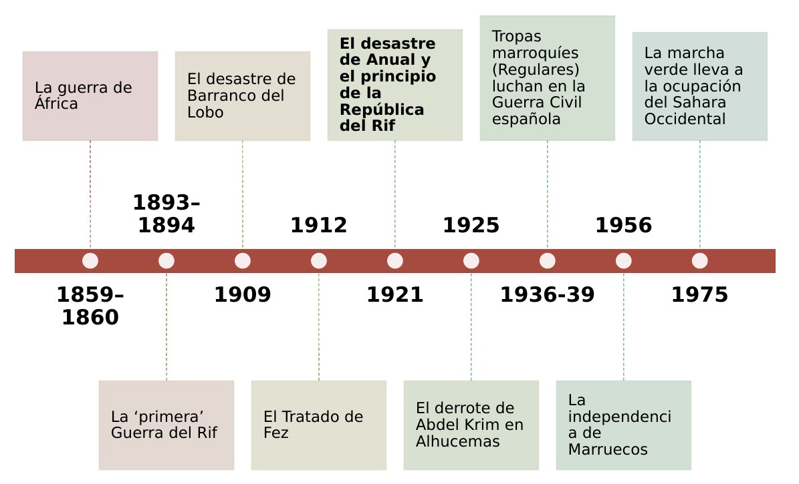
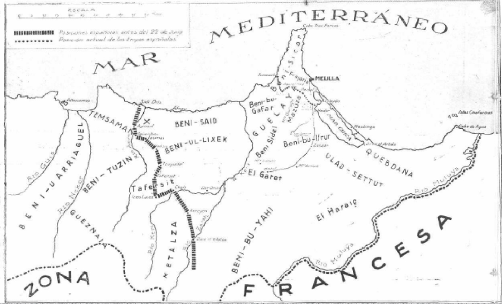
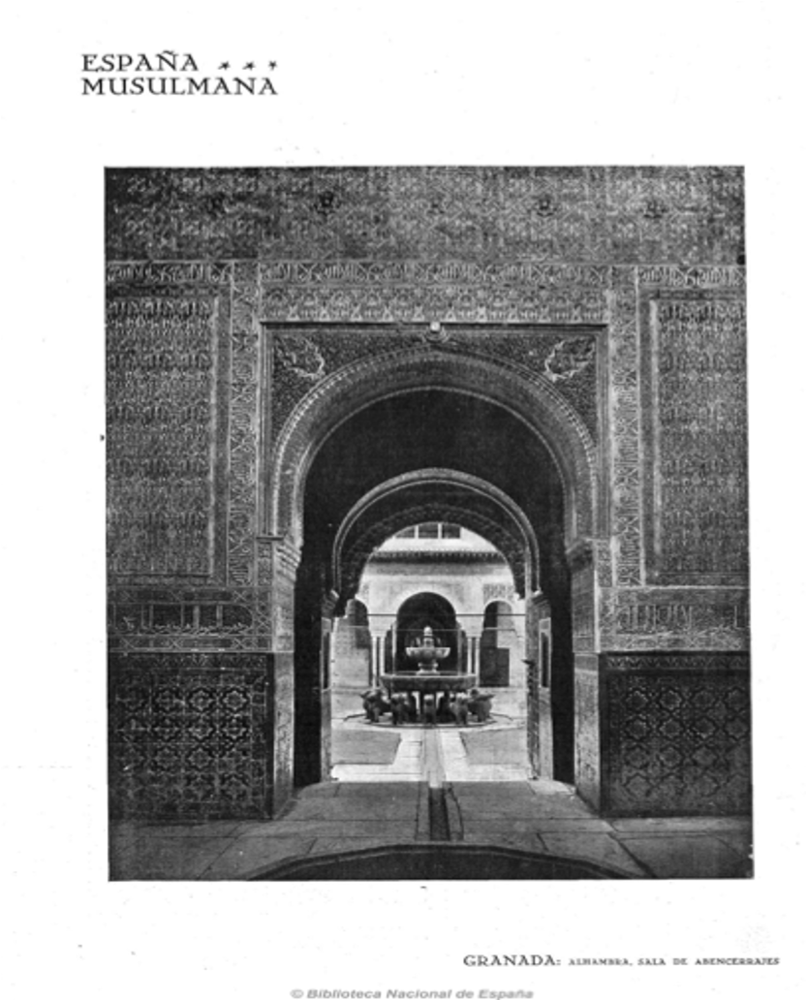
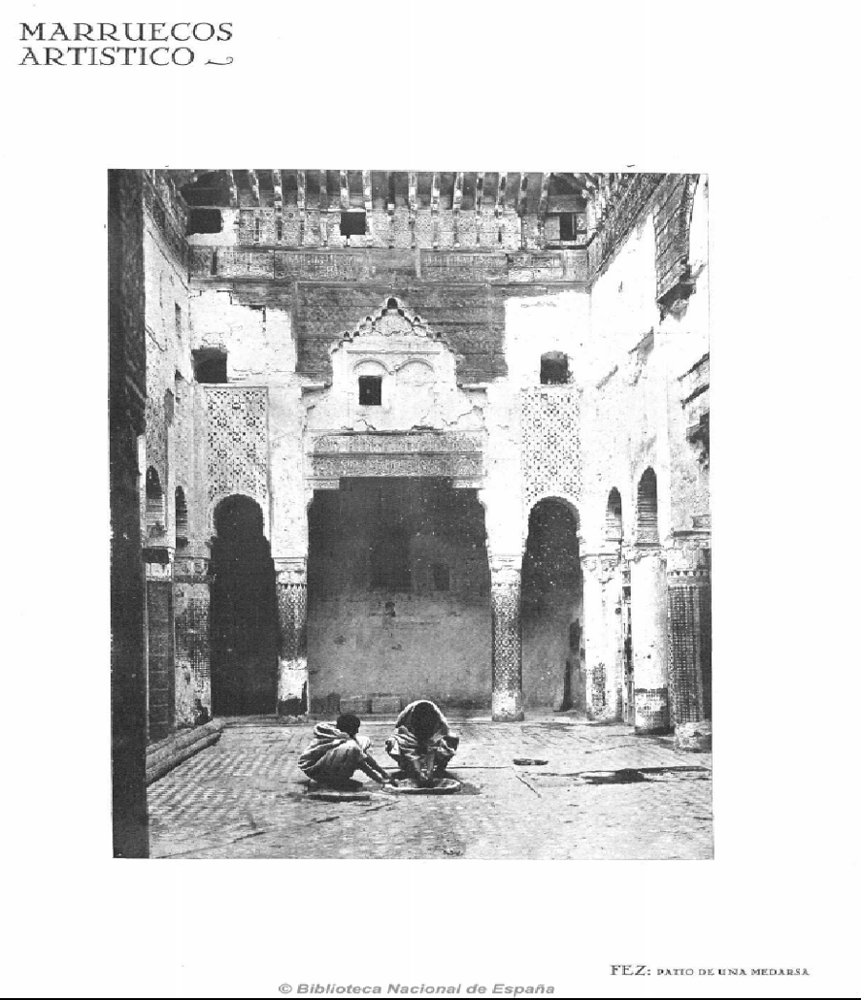
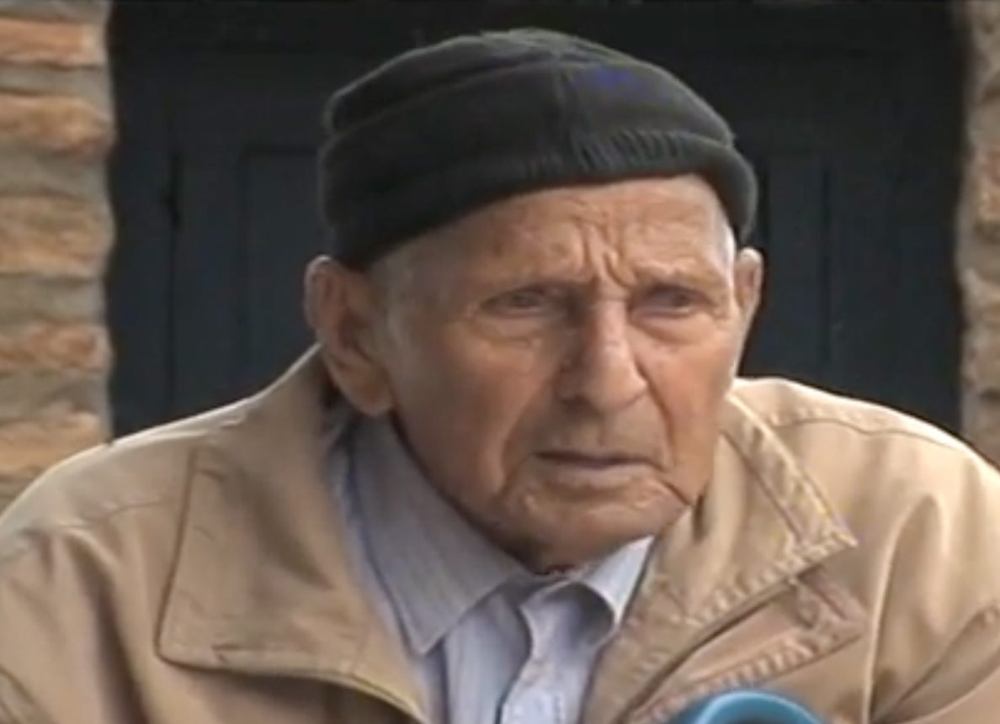
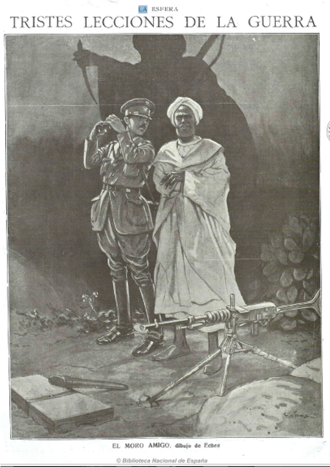
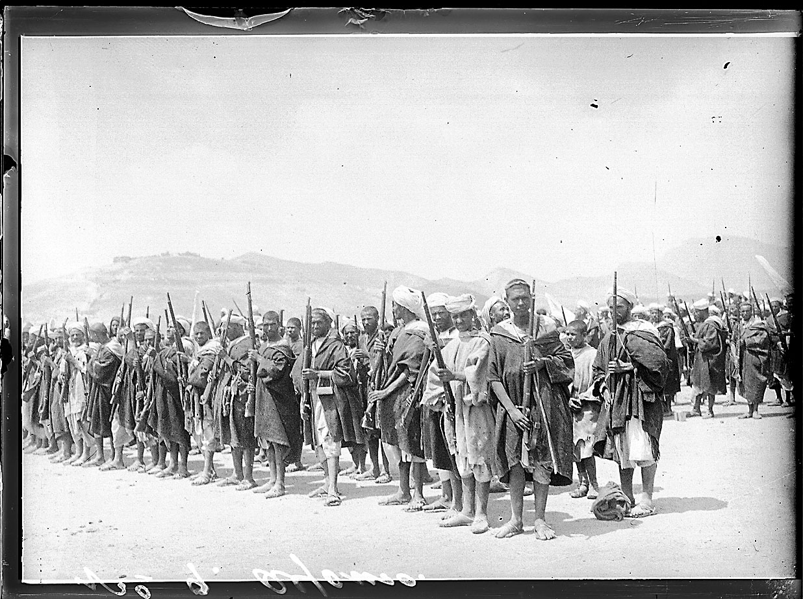

Una propuesta de memoria histórica para el aula. En esta sesión exploraremos la colonización española de Marruecos a través de fuentes primarias: fotografías, artículos de prensa, entrevistas con testigos, y testimonios literarios.
Desde la Guerra de África (1859–1860) hasta la independencia de Marruecos (1956), España mantuvo una presencia colonial en el norte de África durante casi un siglo, marcada por guerras, resistencia y el discurso del "hermanamiento".

Reflexionar sobre la historia del colonialismo español en el norte de África y la memoria histórica de eventos significativos y traumáticas para las diversas culturas a ambos lados del Estrecho de Gibraltar.
La historia tiene mucho que ver con la identidad, con de las formas en la que la sociedad se define cara al futuro ademas del pasado.
Participar en el proceso de construir la memoria histórica


Mirad como cuestiona el concepto de civilización.
Observar y comentar el uso de la palabra ‘moro’ y notar que en esa época, la palabra no tenía tanto significado peyorativo.

Entrevistas con testigos e historiadores en el documental "El laberinto marroquí" (2007).


Entrevistas con testigos.
¿Como creéis que deberíamos recordar, como sociedad multicultural, el pasado colonial de España en Marruecos?
¿Cómo deberíamos conmemorar eventos como el desastre de Annual, reconociendo el impacto que tuvo sobre la población del Rif tanto como la población de España?
